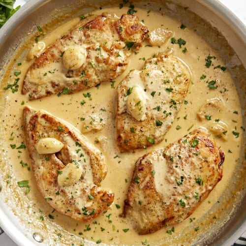

Prep Time: 10 minutes
Cook Time: 30 minutes
Total Time: 40 minutes
Servings: 4
Difficulty: Medium
Step 1: Using a sharp knife, carefully fillet each chicken breast into two thinner cutlets.
Step 2: Season each breast with Italian seasoning, salt, and black pepper. Sprinkle flour on both sides.
Step 3: Heat a skillet over medium heat and add olive oil and butter. Cook chicken until golden brown.